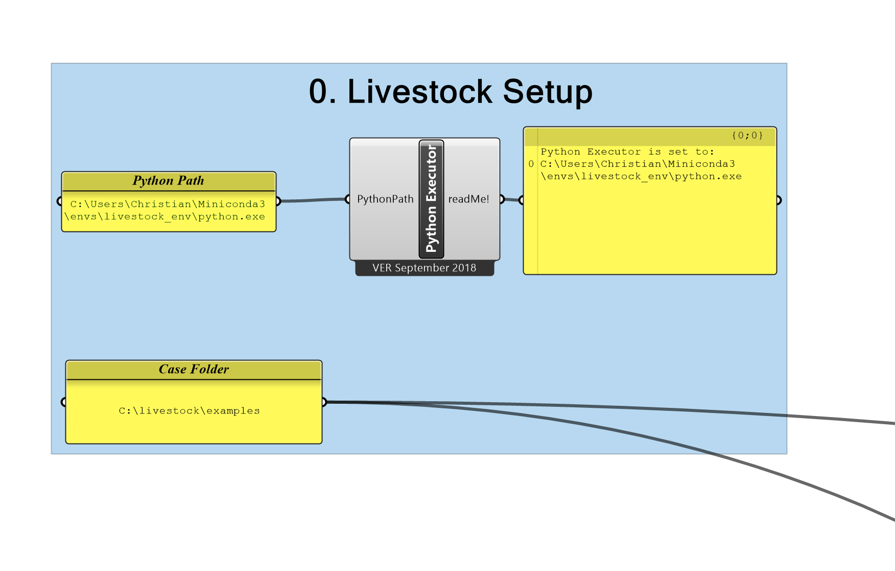
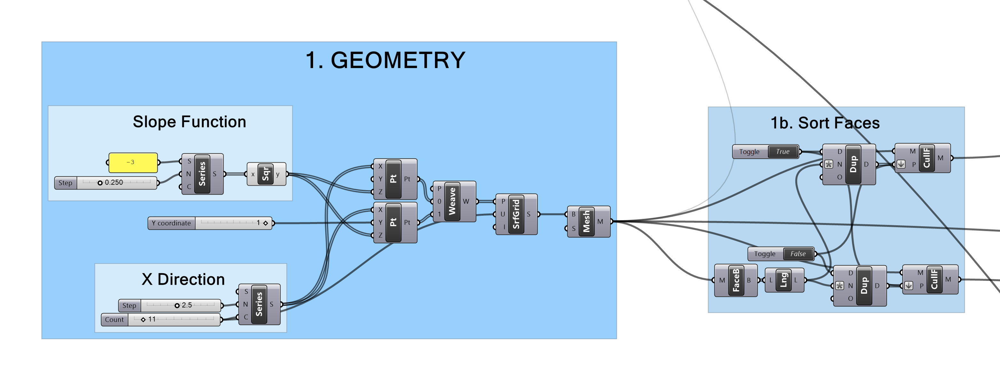
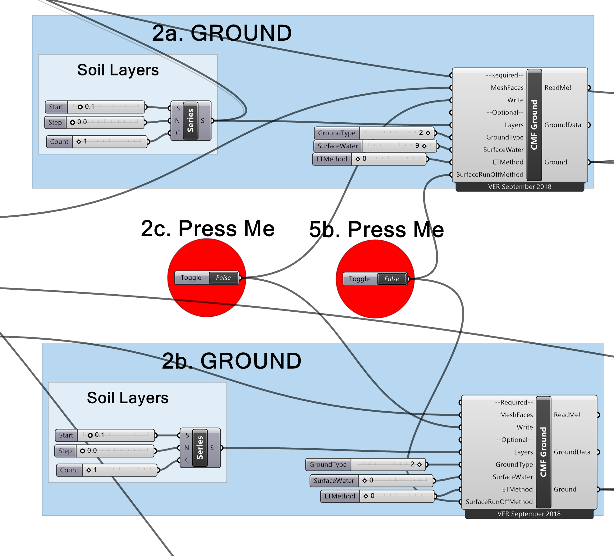
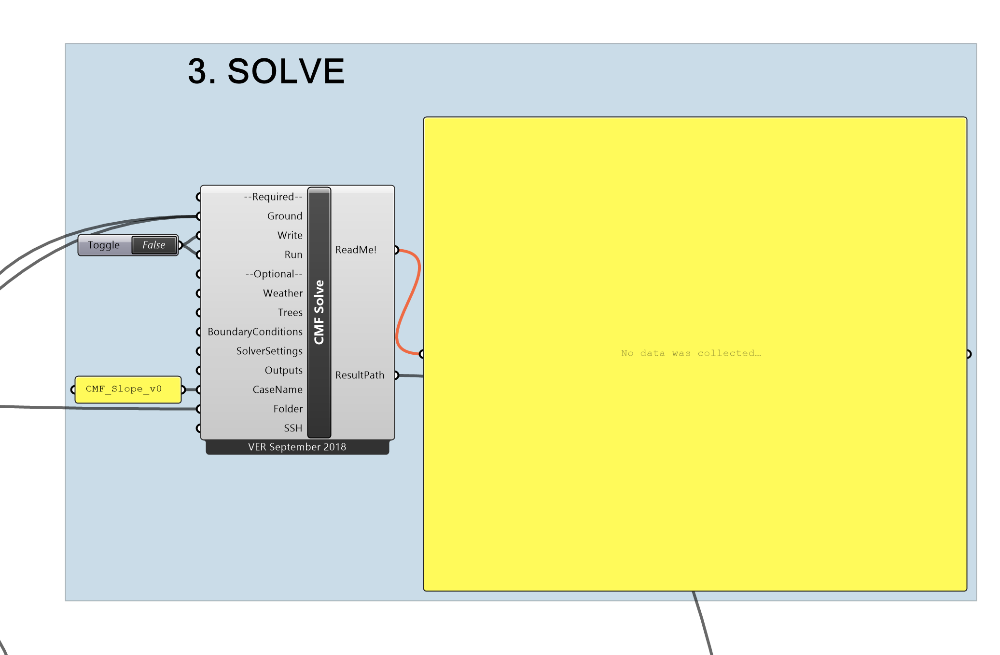
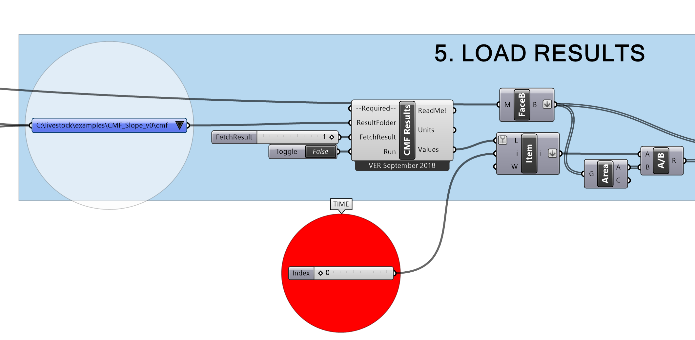
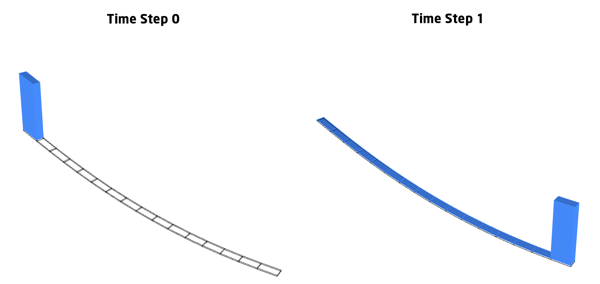
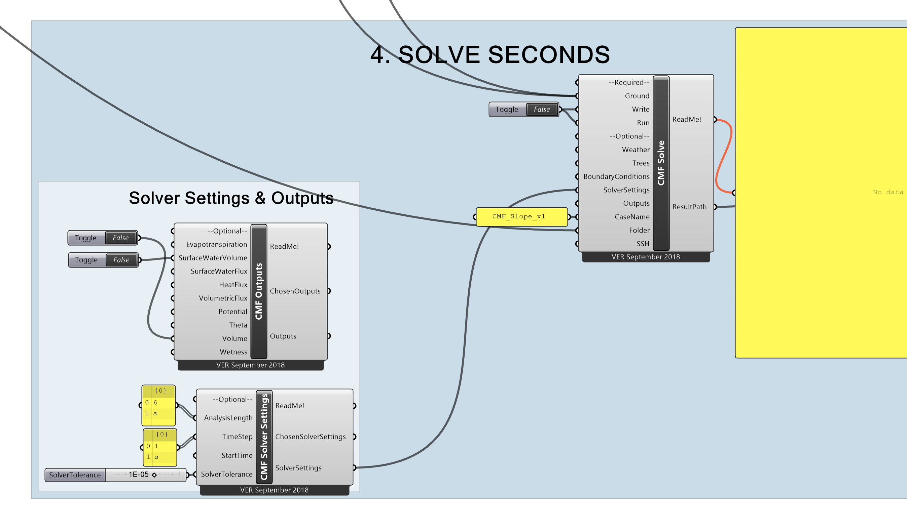
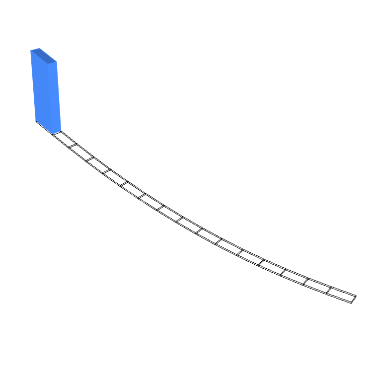

In this tutorial we will walk through making a Grasshopper script for simulating a simple glass surface run-off case.
We will use CMF and Livestock to compute the run-off, so make sure you have it installed. A description can be found here. You can find the Grasshopper script for the tutorial here or in the Examples folder that comes with the Livestock download.
0. Livestock Setup

We will start in the top left corner at the group: "0. Livestock Setup". Here you have to put in the path for your Python interpreter. If you are unaware, where it is located and have installed Miniconda as per the installation instructions, then you should be able to open your command prompt and write:
conda info
Information about your Miniconda installation will appear and under envs directories you should be able to find the
path for your Conda environments. You should simply copy that and append \livestock_env\python.exe to the end.
There is also a panel with the case folder. By default it is set to C:\livestock\examples you can change it to
whatever you like or leave as it is. Just make sure the folder exists before proceeding.
1. Geometry

The geometry for this tutorial is create from a simple function, which is turned into, first a surface and then a mesh.
You are encourage to change the Slope Function to see how the different slope creates different behaviours.
1b. Sort Faces
This groups sorts the top face from the rest as a preparation for the Ground components.
2. Ground
There are two ground groups: 2a and 2b

2a.
The group 2a sets the ground settings for the top face of the mesh. The inputs to the CMF Ground component is:
MeshFaces: takes the faces that we sorted in 1bLayers(the soil layers), which in this case is0.1because we only want 1 layer with the thickness of 0.1 to model the mesh slope as a glass model.GroundTypeis set to2to mimic non-permeable pavement.SurfaceWateris set to9m3ETMethodis set to0, because we don't want any evapotranspiration.SurfaceRunOffMethodis set to0, which is Kinematic Surface Run-Off.
2b.
Group 2b is much like 2a, besides we have different mesh faces and there is no surface water to begin with.
2c.
Press the boolean toggle to write the meshes to the hard drive.
3. Solve

The outputs from CMF Ground is collected in the CMF Solve component. We give it the Case Path, which where specified
in the beginning and a CaseName. You don't need to give the Solve component anymore information. It will use the
default settings to solve the case. Press the boolean to write and run the component.
A window will pop up printing some information about the progress of the simulation. When it closes the simulation is
over. Click the boolean toggle back to False.
5. Load Results

You can now go and visualize the results. You need to click the boolean toggle to run the CMF Results component.
The red time slider lets you step through the time steps of the simulation.

When visualizing the results you will observe two things:
In time step 0 all the the water is on the top. In time step 1 all the water is in the bottom. So is there
something wrong with the simulation? No, it is all correctly computed. The time steps with the default solver settings
are set to 1 hour. As it takes far less than an hour for the water to run down the slope, you will only see the start
conditions in time step 0 and the end conditions in time step 1.
By using the Kinematic surface run-off we are always 'moving' the water to a mesh face with lower z-coordinate. Which
means that all the water ends up in the bottom most mesh face, in this case.
Using the diffusive surface run-off we can calculate the pool, which actually forms at the bottom of the slope. We will do that in 4. The con of using the diffusive surface run-off is that it is much more computation heavy than the kinematic. You will probably not notice a difference in this small case, but if you try it on a large mesh you will experience a big difference.
4. Solve Seconds

We have connected the CMF Ground the same way as in 3. In addition to that we have also inputted information from
CMF Solver Settings. Here it is possible to set the size of the time steps and the analysis length. I have chosen the
AnalysisLength to be 6 seconds and the TimeStep to be 1 second.
Before you go and press the boolean toggle to write and run the solver, go to 4b. and set the SurfaceRunOffMethod to
1 - Diffusive.
Run the case.
5. Load Results (again)
Change the blue item selector to CMF_Slope_v1 to get the diffusive case. Now it should be possible to see that the
water runs down the slope and forms a pool at the bottom.
